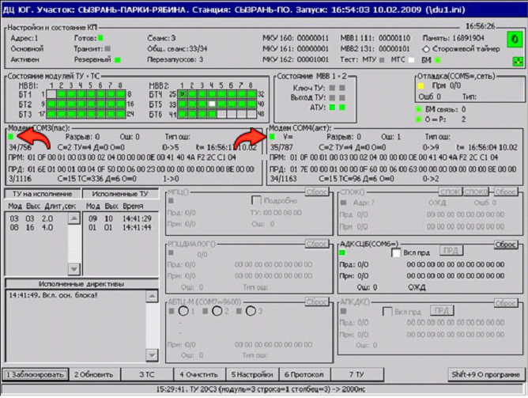

1. Отсутствие связи Линейного Пункта с Центральным Постом
На дисплейном блоке (БД), отображающим состояние Контролируемого пункта (КП), наличие связи ЛП с ЦП будет подсвечиваться зелёными квадратиками в модемном поле канала А (COM3) и канала B (COM4), как показано на рисунке ниже. Если связь ЛП с ЦП отсутствует, то квадаратики в модемном поле подсвечиваются белым цветом. В этом случае необходимо на КП осуществить переход с «Основного» комплекта на «Резервный».
Для устранения неисправности на «Основном» комплекте необходимо последовательно поменять некоторые модули, на этом комплекте, предварительно отключив на нём питание.
1.1.1. Возможно неисправен МКУ
Заменить МКУ
1.1.2. Возможно неисправен МИГ-2АТ
Заменить МИГ-2АТ
1.1.3. Возможно неисправен МВК
Заменить МВК
При этом зелёные индикаторы состояния на МИГ-2АТ мигают, как на «Основном» так и на «Резервном» комплекте. Мигание зелёных индикаторов означает разрыв связи МИГ-2АТ на КП с модемами связевого шкафа.
1.2.1. Связисты должны проверить своё связевое оборудование и коммутации линий связи.
1.2.2. Возможно неисправен МВК
Заменить МВК
Рабочий вид окна Контролируемого пункта на БД
